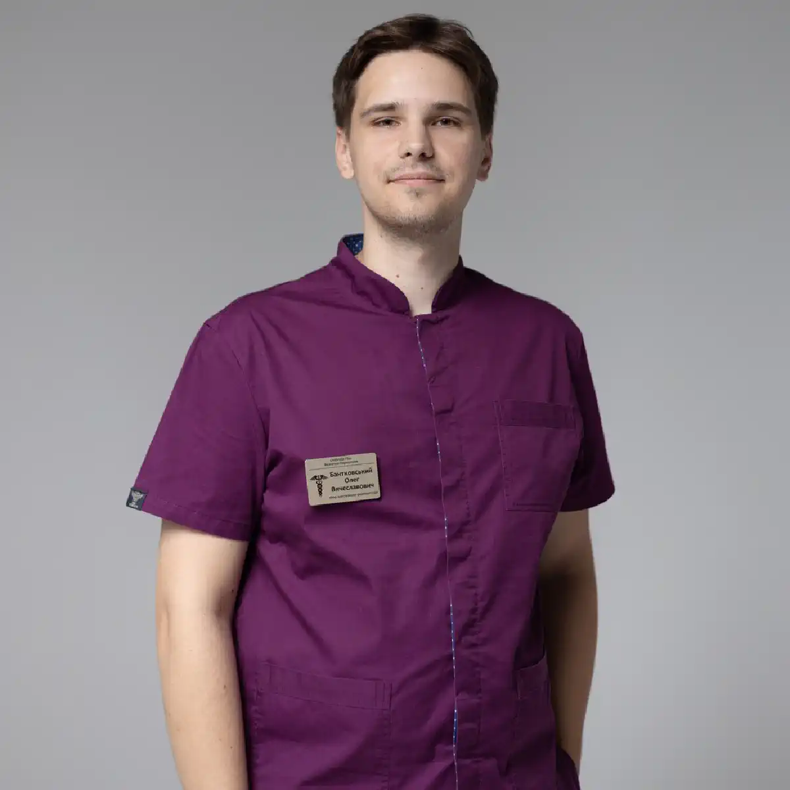

+38(068)
79 72 782
+38(068)
79 72 782Капельница от отравления Черноморск
Быстрое очищение организма


Бесплатная консультация, работаем круглосуточно 24/7
Быстрое очищение организма

Дата написания: Обновляется...
Последнее обновление: Обновляется...
Пищевое отравление — это острое состояние, возникающее вследствие попадания в организм токсинов, бактерий или некачественных продуктов. Оно сопровождается выраженным ухудшением самочувствия и требует своевременной помощи. В Черноморске одним из наиболее эффективных способов быстрого восстановления считается инфузионная терапия — капельницы, которые помогают быстро устранить интоксикацию, восстановить водно-электролитный баланс и нормализовать работу внутренних органов.
Капельницы действуют значительно быстрее, чем пероральные препараты, поскольку активные вещества поступают непосредственно в кровь. Это особенно важно при выраженной тошноте и рвоте, когда приём лекарств внутрь затруднён или неэффективен. Благодаря комплексному составу инфузионных растворов удаётся одновременно снизить нагрузку на печень, поддержать работу сердечно-сосудистой системы и ускорить выведение токсинов. Своевременно проведённая инфузионная терапия позволяет не только облегчить симптомы, но и предотвратить развитие осложнений, таких как сильное обезвоживание, нарушение обмена веществ и ухудшение общего состояния организма. Именно поэтому при выраженных признаках отравления важно не затягивать с обращением за медицинской помощью.
Первые признаки отравления могут проявиться уже через несколько часов после употребления некачественной пищи или заражённой воды. Чаще всего это состояние начинается с выраженной тошноты, которая может переходить в многократную рвоту, а также сопровождается диареей, болями или спазмами в животе и общей слабостью. Нередко пациенты отмечают повышение температуры тела, головную боль, ломоту в мышцах, озноб и ощущение сильной усталости.
По мере развития интоксикации организм начинает активно терять жидкость и жизненно важные электролиты. Это приводит к обезвоживанию, которое проявляется сухостью во рту, жаждой, снижением количества мочеиспусканий, учащённым сердцебиением и головокружением. На фоне этого ухудшается общее состояние, снижается концентрация внимания и работоспособность, появляется выраженная апатия.
Если своевременно не принять меры, симптомы могут усиливаться, а интоксикация — нарастать. Это увеличивает риск осложнений, таких как серьёзные нарушения водно-солевого баланса, слабость сердечно-сосудистой системы и общее истощение организма. Именно поэтому при появлении первых признаков отравления важно внимательно отнестись к своему состоянию и при необходимости обратиться за круглосуточной медицинской наркологической помощью.
Медицинская помощь необходима при выраженных симптомах или заметном ухудшении состояния пациента. Особую опасность представляют многократная неукротимая рвота, сильная диарея, высокая температура тела, резкая слабость и признаки обезвоживания — сухость кожи и слизистых, сильная жажда, редкое мочеиспускание, учащённое сердцебиение. В таких условиях организм стремительно теряет жидкость и электролиты, что может привести к нарушению работы сердечно-сосудистой системы, почек и других жизненно важных органов.
Обратиться к врачу наркологу и терапевту следует, если симптомы сохраняются более суток, становятся интенсивнее или не поддаются домашнему лечению. Особое внимание нужно обратить на такие тревожные признаки, как спутанность или потеря сознания, сильное головокружение, судороги, выраженная слабость, потемнение в глазах, резкие скачки артериального давления. Также опасными являются ситуации, когда человек не может удерживать жидкость из-за постоянной рвоты или полностью отказывается от питья. Отдельно стоит отметить группы риска — детей, пожилых людей, беременных женщин и пациентов с хроническими заболеваниями. У них обезвоживание и интоксикация развиваются быстрее и могут протекать значительно тяжелее, поэтому в таких случаях откладывать обращение за медицинской помощью особенно опасно.
В подобных ситуациях самолечение часто оказывается неэффективным и может усугубить состояние. Неправильно подобранные препараты или игнорирование симптомов способны привести к осложнениям, затянуть процесс восстановления и увеличить нагрузку на организм. Своевременное обращение к врачу позволяет быстро провести диагностику, оценить степень интоксикации и назначить эффективное лечение, включая инфузионную терапию при необходимости.
Лечение пищевого отравления направлено на быстрое выведение токсинов из организма, восстановление водно-электролитного баланса и нормализацию работы внутренних органов. В лёгких случаях организм способен справиться самостоятельно при условии правильной поддержки: рекомендуется обильное питьё для предотвращения обезвоживания, щадящая диета с исключением тяжёлой и раздражающей пищи, а также приём сорбентов, которые помогают связывать и выводить вредные вещества из желудочно-кишечного тракта.
Дополнительно важно обеспечить покой, достаточный сон и минимальную нагрузку на организм. Постепенное восстановление питания играет ключевую роль: сначала вводятся лёгкие продукты, такие как рис, сухари, нежирные бульоны, и только после улучшения состояния рацион расширяется. Такой подход помогает снизить нагрузку на желудок и ускорить процесс восстановления.
Однако при более тяжёлом течении отравления требуется комплексный медицинский подход. Врач проводит оценку состояния пациента, учитывает выраженность симптомов, степень обезвоживания и наличие сопутствующих заболеваний. На основе этого подбирается индивидуальная терапия, которая может включать медикаментозное лечение, препараты для регидратации, средства для нормализации работы желудочно-кишечного тракта и устранения симптомов. В случаях выраженной интоксикации или невозможности приёма препаратов внутрь применяется инфузионная терапия. Капельницы при алкогольном отравлении или пищевой интоксикации позволяют быстро восполнить дефицит жидкости, нормализовать электролитный баланс, поддержать работу печени и почек, а также ускорить выведение токсинов из организма.
Капельницы при пищевом отравлении — это эффективный метод медицинской помощи, направленный на быстрое устранение интоксикации и восстановление организма. Инфузионная терапия применяется при выраженных симптомах, когда обычные средства не дают достаточного результата или состояние пациента требует более интенсивного лечения. Основная задача капельниц — восполнить потерю жидкости, вывести токсины и поддержать работу жизненно важных органов. В отличие от таблеток, растворы вводятся внутривенно, благодаря чему начинают действовать значительно быстрее и эффективнее, особенно при наличии рвоты и нарушении работы желудочно-кишечного тракта.
Состав капельницы для выхода из запоя или при пищевом отравлении подбирается индивидуально, в зависимости от состояния пациента. Чаще всего используются растворы для регидратации, которые восстанавливают водно-солевой баланс, а также препараты, способствующие детоксикации организма. Дополнительно могут применяться средства для нормализации обмена веществ, витамины, противорвотные препараты и спазмолитики. Инфузионная терапия помогает:
Процедура проводится медицинским специалистом с учётом всех показаний и противопоказаний. Уже после первой капельницы пациенты часто отмечают значительное облегчение: уменьшаются симптомы интоксикации, улучшается самочувствие и появляется ощущение восстановления сил. В более тяжёлых случаях может потребоваться курс капельниц, который обеспечивает полноценное восстановление организма и снижает риск осложнений.
Стоимость капельницы от пищевого отравления в Черноморске начинается от 2199 грн.
| Популярные услуги | Цена |
|---|---|
| Нарколог Одесса | От 1500 грн |
| Капельница от алкоголя | От 2199 грн |
| Вывод из запоя на дому | От 2199 грн |
| Кодирование от алкоголизма | От 6000 грн |
Да, капельницу при пищевом отравлении можно поставить в домашних условиях. Это удобный и востребованный вариант, особенно в тех случаях, когда пациент испытывает выраженную слабость, тошноту или не может самостоятельно посетить клинику. Выезд врача на дом позволяет получить квалифицированную медицинскую помощь без лишней нагрузки и стресса. Перед проведением процедуры специалист обязательно проводит осмотр, оценивает общее состояние пациента, уровень интоксикации, наличие обезвоживания и сопутствующих симптомов. На основании этого подбирается индивидуальный состав капельницы, который максимально эффективно поможет именно в конкретной ситуации.
Процедура выполняется с соблюдением всех медицинских стандартов и правил асептики, что гарантирует её безопасность. Используются стерильные расходные материалы и проверенные препараты, а сам процесс контролируется специалистом от начала до завершения. При необходимости врач также даёт рекомендации по дальнейшему лечению и восстановлению.
Лечение интоксикации на дому в Одессе или Черноморске позволяет пациенту находиться в привычной и комфортной обстановке, не тратя время на дорогу и ожидание. Это особенно важно при плохом самочувствии, когда даже минимальная физическая нагрузка может усугубить состояние. Капельница на дому помогает быстрее стабилизировать организм, уменьшить симптомы и ускорить процесс восстановления без госпитализации.
Состав капельницы при пищевом отравлении подбирается индивидуально, с учётом степени интоксикации, возраста пациента, сопутствующих заболеваний и выраженности симптомов. Основу инфузионной терапии, как правило, составляют растворы для регидратации, которые помогают быстро восполнить дефицит жидкости и электролитов, восстановить водно-солевой баланс и нормализовать общее состояние организма.
Дополнительно в состав капельницы включаются препараты для детоксикации, способствующие ускоренному выведению токсинов из крови, а также витамины (чаще всего группы B и витамин C), которые поддерживают обменные процессы и помогают организму быстрее восстановиться. Важную роль играют средства для поддержки работы внутренних органов — печени, почек и сердечно-сосудистой системы, которые испытывают повышенную нагрузку при интоксикации.
В зависимости от состояния пациента могут добавляться противорвотные препараты, позволяющие быстро устранить тошноту и предотвратить потерю жидкости, спазмолитики для снятия болевого синдрома в области живота, а также гепатопротекторы, защищающие клетки печени и улучшающие её функцию. При необходимости применяются средства, направленные на нормализацию обменных процессов и улучшение общего самочувствия.
При лёгких формах пищевого отравления допускается использование аптечных препаратов , которые помогают облегчить симптомы и поддержать организм в процессе восстановления. Наиболее распространённой группой являются сорбенты — такие как Сорбекс и Смекта. Они связывают токсические вещества в желудочно-кишечном тракте и способствуют их выведению, уменьшая проявления интоксикации и нагрузку на организм.
Для восстановления водно-солевого баланса широко применяется Регидрон, который помогает компенсировать потерю жидкости и электролитов при рвоте и диарее, предотвращая обезвоживание. В случаях, когда присутствует выраженная диарея бактериального характера, могут использоваться кишечные антисептики, такие как Нифуроксазид и Альфа Нормикс. Эти препараты воздействуют на патогенные микроорганизмы в кишечнике и помогают быстрее нормализовать состояние.
Дополнительно могут применяться средства для нормализации работы желудочно-кишечного тракта, уменьшения спазмов и дискомфорта. В некоторых случаях рекомендуется приём пробиотиков для восстановления микрофлоры кишечника после перенесённого отравления. Даже при лёгком отравлении медикаменты необходимо принимать строго по инструкции и по возможности после консультации с доктором. При отсутствии улучшения, усилении симптомов или ухудшении состояния необходимо обратиться к врачу, чтобы избежать осложнений и подобрать более эффективное лечение.
Народные методы могут использоваться как вспомогательная мера при лёгких симптомах пищевого отравления. Они направлены на поддержание организма и облегчение общего состояния. К таким способам относятся обильное питьё — чистая вода, тёплый слабый чай, отвары ромашки или других мягких трав, обладающих успокаивающим действием на желудочно-кишечный тракт. Также рекомендуется лёгкая диета с исключением жирной, острой и тяжёлой пищи, чтобы снизить нагрузку на пищеварительную систему.
Дополнительно может быть полезен покой, отказ от физической нагрузки и постепенное восстановление питания по мере улучшения самочувствия. Иногда используют рисовый отвар или сухари, которые помогают мягко стабилизировать работу кишечника и уменьшить раздражение слизистой.
Однако важно понимать, что такие методы не устраняют причину интоксикации и не способны полностью заменить лечение отравления в стационаре. При выраженных симптомах, сильной рвоте, диарее, высокой температуре или признаках обезвоживания полагаться только на народные средства не рекомендуется. В таких случаях необходимо обратиться за квалифицированной медицинской помощью, чтобы избежать осложнений и ускорить восстановление организма.
Для уменьшения тошноты при пищевом отравлении важно обеспечить организму покой и минимальную нагрузку на желудочно-кишечный тракт. Рекомендуется пить жидкость небольшими глотками — это может быть чистая вода или специальные растворы для регидратации, такие как Регидрон. Такой подход помогает предотвратить обезвоживание и не провоцирует усиление рвоты. Следует полностью исключить тяжёлую, жирную, острую пищу и временно ограничить приём пищи до улучшения состояния. По мере восстановления можно постепенно вводить лёгкие продукты — сухари, рис, нежирные бульоны. Важно избегать переедания, так как перегрузка желудка может усилить тошноту и замедлить восстановление.
При выраженной тошноте и частой рвоте могут применяться медикаментозные средства, но только по назначению врача. Специалист подбирает препараты с учётом состояния пациента, чтобы безопасно и эффективно устранить симптом. В составе капельницы также часто присутствуют противорвотные средства, которые действуют быстро, так как вводятся внутривенно, и помогают стабилизировать состояние уже в короткие сроки. Комплексный подход — покой, правильное питьё и при необходимости срочная наркологическая медицинская помощь — позволяет значительно снизить выраженность тошноты и ускорить восстановление организма.
Профессиональная помощь врача позволяет быстро стабилизировать состояние пациента и предотвратить развитие осложнений, связанных с интоксикацией. Специалист проводит первичную диагностику, оценивает степень обезвоживания, выраженность симптомов и общее состояние организма. На основании этого подбирается индивидуальная схема лечения, которая может включать медикаментозную терапию и инфузионное восстановление.
В Черноморск доступна круглосуточная медицинская помощь с возможностью срочного выезда врача на дом для снятия запоя или пищевого отравления. Это особенно важно при тяжёлых состояниях, когда пациент не может самостоятельно передвигаться или требуется срочная детоксикация. Домашний формат позволяет начать лечение максимально быстро, без потери времени, и обеспечить постоянный контроль за состоянием пациента. Своевременное обращение к врачу — это ключевой фактор быстрого и безопасного восстановления. Квалифицированная помощь помогает не только устранить симптомы, но и предотвратить серьёзные последствия, восстановить работу организма и значительно сократить период реабилитации.
Звоните прямо сейчас: +38(050-021-69-57)

Статья проверена экспертом
Могучев Станислав
Врач терапевт, ординатор
Возможно интересная статья:
Янтарная кислота, Бетаргин и Энтеросгель при алкогольной интоксикации

Да, мы строго соблюдаем полную конфиденциальность на всех этапах лечения. Информация о пациенте, диагнозе и прохождении терапии не передаётся третьим лицам. Обращение к нам не влечёт постановку на учёт. Вы можете быть уверены в безопасности и анонимности.
Программа лечения разрабатывается индивидуально после консультации со специалистом. Учитываются вид зависимости, её длительность, физическое и психологическое состояние пациента. Такой подход позволяет повысить эффективность терапии и снизить риск срыва. Мы не используем шаблонные решения.
Да, мы сопровождаем пациентов и после основного курса лечения. Проводятся консультации, рекомендации по адаптации и профилактике рецидивов. При необходимости возможна дальнейшая психологическая поддержка. Это помогает сохранить результат и вернуться к полноценной жизни.
Анонимно

Не знаю что съел, но рвало очень крепко. Вызвал врача. Станислав Вячеславович просто спаситель. 10/10.
Номер телефона:
+380 (68) 797 27 82
+380 (50) 021 69 57
Адрес наркологического центра вашего города уточняйте по
телефону
Работаем в: Киеве, Одессе, Львове, Харькове, Днепре,
Запорожье, Черкассах, Чугуеве, Черноморске, Каменском
Telegram: t.me/umbrellaplus
График работы: Круглосуточно